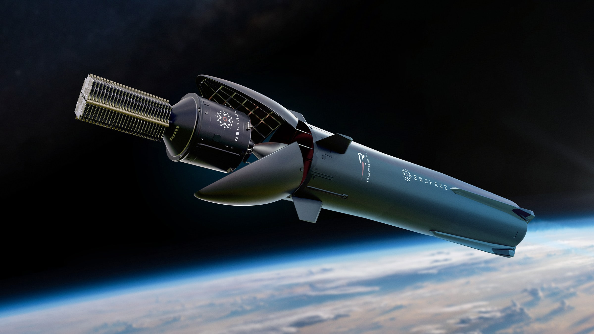
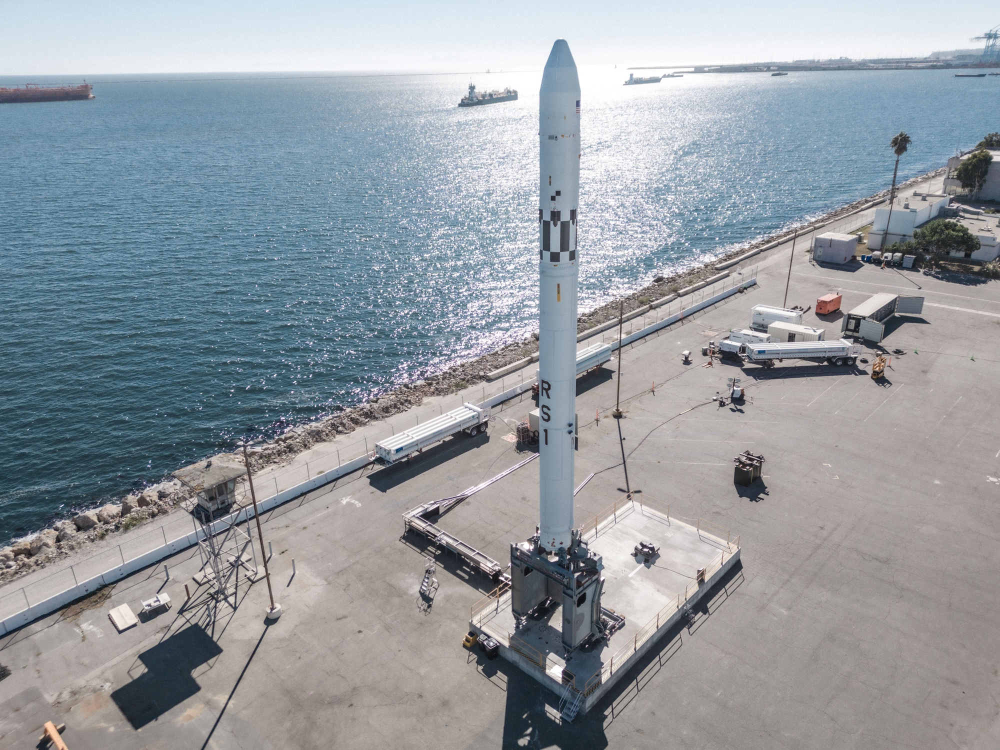

NewSpace: The Agile Tech Startups Redefining The Space Industry
Chiming Wang
January 07, 2024
Special thanks to Eddy Xu and Ryan Leung for feedback and review.
This can also be viewed on Medium.
Inventions create industries. And after years of domination by inventors and government agencies, these new industries turn to private companies. We've seen this happen with steam engines1, steel2, and telecommunications3. Now, we're seeing it happen with space.
For decades, the spaceflight industry was dominated exclusively by only a handful of powerful national governments with the resources to launch instruments and humans into space. NASA competed with the USSR in an intense space race in the 1960s, and the ESA was established later.
But towards the end of the 20th century, the US government deregulated space, giving private American companies access to orbit. The Commercial Space Launch Act of 1984 and the SPACE Act of 2015 removed restrictions on space exploration. NASA wanted partnerships with the private sector, so large space companies backed by the US government emerged, starting in satellite imagery with MAXAR Technologies (a combination of DigitalGlobe, SSL, Radiant Solutions, and Vricon) and in space launches with ULA (Lockheed Martin and Boeing).
But now, their dominance of spaceflight is being challenged by a new type of business: space startups, or “NewSpace.” By incorporating a flexible and entrepreneurial approach to space, these companies are dramatically altering the landscape of space exploration, introducing new technologies, and innovating across the industry.
SpaceX Falcon Heavy booster landing. Photo from Wikipedia.
The Differences Between OldSpace Companies and NewSpace Startups, and Why High-Tech NewSpace Startups Win
Capitalism, free markets, and entrepreneurship create competition and drive innovation.
Newer, smaller startups with a tighter budget are forced to move faster, innovating and using advanced technologies while developing new inventions along the way. They take risks, using newer emerging technologies like 3D-printed rockets (Relativity Space) and aerospike engines (Firefly Alpha) to beat competitors. This type of intense competition is not seen in OldSpace, where big companies, like ULA, have guaranteed cashflow from government contracts and don't feel the need to innovate.
Newer space companies use innovative technologies to develop advanced launch vehicles that make NASA rockets look vintage.

SpaceX Falcon 9 Block 5 next to NASA SLS. Photo from Wikipedia.
The modern space startups of this decade have smaller and faster teams of younger employees. The environments at these startups are completely different — they resemble the results-driven workplaces of Google and Meta rather than the science-focused environments at NASA. They deploy new technologies initially developed in the information technology industry, like complex sensors, data analysis methods, and AI. In larger space contractor companies, launch solutions are custom-built and the customer manages every detail. This takes time and isn't viable for rapid, regular daily launches. Instead, NewSpace startups build products. They build advanced rockets first, then attract customers. This enables them to develop and “ship” products faster. This pattern was first seen in Silicon Valley, where software startups like Cloudflare beat established companies like Network Solutions.
Here's an interesting statistic: In 2023, while ULA completed 3 space launches, SpaceX completed 98 — SpaceX launches ULA's entire yearly launch volume almost every week. NASA and large space companies consistently underperform expectations while agile startups like SpaceX and Blue Origin move fast and make progress behind their eccentric tech entrepreneur CEOs.
The Benefits of Free Market Capitalism in Space
Free market capitalism creates competition, which is a benefit in any industry because it leads to technological innovation and prosperity. In space, technology matters. The best way to build that technology is by allowing companies to compete with each other. As space startups develop innovative launch and rocket technologies to compete with each other, the cost of accessing space decreases.
This opens up a whole new world for humanity — literally. With inexpensive space launches, scientists and pioneers can further develop in space. There are now entire companies devoted solely to building high-tech space stations (Gravitics) for humans to live in. The cost of space tourism will go down and space will be easily accessible for more people.
There are so many possibilities to be explored in space. Asteroid mining will go mainstream. The moon will be a vacation destination for people all over the world. Inhabitable ground bases on Mars will allow scientists to further study the planet.
What's Next For The Space Industry?
The goal of a company is to make money. To do that, it must enter a market that exists. This limits their ability to explore in space beyond Earth or the moon. NASA and other government agencies will always be the first to explore any particularly new part of space, and they always have been — they are the ones that explore new planets, collect asteroid samples, and observe stars. They are taking the risks for humanity, and we must respect that.
But we should also acknowledge that the inevitable replacement of old space companies by NewSpace is not necessarily harmful. NewSpace startups innovate, moving rapidly to build new rockets and incorporate emerging technologies into launch vehicles. They are poised to become industry leaders. They are the ones helping to lower the barrier of entry to space. They are the ones who truly advance humanity as a civilization. They are the ones enabling us to one day live our multi-planetary futures.
Because of modern space startups, the sky is no longer the limit.
An Overview of NewSpace Startups

SpaceX Starship. Photo from SpaceX (Flickr).
SpaceX, founded by Elon Musk, is the leader in the space industry. Their Falcon 9 and Falcon Heavy reusable launch vehicles are well-known for reliability and power. SpaceX launches payloads regularly, and they are working on their ambitious Starship project, which is progressing very fast. Starlink, which is a subsidiary of SpaceX, provides global internet coverage to customers using the world's largest constellation of satellites in low earth orbit (LEO). SpaceX is a pioneer in NewSpace, using groundbreaking technologies to reduce launch costs.
Relativity Terran 1 rocket on the launch pad. Photo from Trevor Mahlmann/Relativity Space.
Relativity Space is a launch services provider that specializes in 3D-printed rockets and rocket parts. They are currently working on their Terran R, a 3D-printed two-stage heavy-lift partially reusable launch vehicle. Its first flight is expected in 2026 and it will be able to compete with SpaceX's Falcon 9.
Stoke Space's Nova rocket. Photo from Stoke Space.
Stoke Space is an emerging space startup developing fully reusable rockets. They focus on the reusability of the second stage, which is usually discarded in traditional launches. This approach significantly reduces launch costs and waste in space missions.
Their second stage also features a new type of clamshell fairing that stays on the rocket even after payload deployment. This means they can use the fairing multiple times and even retrieve assets and land from orbit.
Stoke's Hopper second stage features a unique distributed thruster system with an actively cooled heat shield, enabling it to have rapid reusability.

Rocket Lab's Neutron rocket. Photo from Rocket Lab.
Rocket Lab is a publicly traded launch service provider that specializes in smallsat (small satellite) launches. Electron, their two-stage smallsat launch vehicle, is reusable and uses their partially 3D-printed Rutherford liquid engine on both stages. The Rutherford engine uses battery-powered electric pumps rather than a gas generator, preburner, or expander.
Rocket Lab is currently developing Neutron, their reusable two-stage medium-lift launch vehicle designed to carry payloads to LEO. Neutron will be human-rated and its first stage will be able to land on a floating landing platform downrange.
Blue Origin's New Shepherd launch vehicle. Photo from Blue origin.
Blue Origin, founded by Jeff Bezos, is known for New Shephard, its fully-reusable suborbital launch vehicle designed for space tourism. They are currently developing their New Glenn heavy-lift orbital launch vehicle. Blue Origin lags behind SpaceX, as they are more cautious with experimentation.
Virgin Galactic's SpaceShipTwo spaceplane. Photo from Virgin Galactic.
Founded by British entrepreneur Richard Branson, Virgin Galactic focuses on suborbital space tourism with their SpaceShipTwo spaceplane. SpaceShipTwo uses an air launch method, where a larger aircraft carries it high into the atmosphere before it detaches and starts a rocket-powered ascent. It uses an innovative “feather” shape-shifting method that increases drag and provides added stability during atmosphere reentry.

Firefly's Alpha launch vehicle. Photo from Firefly Aerospace.
Firefly is a Texas-based launch provider that is developing economical, reliable launch vehicles. They use composite materials like carbon composites and innovative aerospike engine designs to decrease costs while improving efficiency. Firefly can perform rapid, on-demand launches, enabling customers to quickly get their payloads into space.
Firefly's Alpha rocket, designed for small to medium-sized payloads, uses lightweight carbon fiber composite materials and a patented tap-off engine cycle to cut costs. They also offer lunar launch services and have their own Blue Ghost lunar lander.

Astranis' telecommunications satellite in orbit. Photo from Astranis Space.
Astranis is a San Francisco-based company that specializes in small geostationary communications satellites designed to bring internet connectivity to underserved regions all over the world. Unlike SpaceX Starlink satellites, which operate in LEO, Astranis satellites operate in geostationary orbit, which is much farther away from Earth.
Astranis MicroGEO satellites have also been used for government use. MicroGEO satellite constellations, which can last for 10 years, have anti-jam technology that can withstand disruptions.
This offers an innovative solution to legacy internet satellite constellations, which are large and expensive and offer limited service in some areas.

ABL's RS1 transportable rocket on the launch pad. Photo from ABL Space Systems (Twitter).
Founded in 2017, ABL Space specializes in small to medium satellite launches using their RS1 rocket, which is transportable by truck and can be rapidly assembled and deployed, allowing for flexible launch locations. The RS1 rocket uses in-house developed E2 engines and has a very low launch cost of $12 million.
GS0 is their transportable rapid deployment ground system that uses shipping containers to enable its rockets to be moved and rapidly launched at any location with a flat concrete pad.
Not all space companies in the world were included in the list above, but it does provide a quick overview of the space industry and the major players involved.
Taking into consideration all these new space startups and the advancements they're making, the future looks extremely bright.
Footnotes
- Thomas Newcomen and James Watt developed/improved the steam engine. Governments (British government) regulated and expanded steam engine technologies, especially in the railway industry. Then, private companies like Boulton & Watt and George Stephenson and Company drove innovation forward by manufacturing steam engines and industrializing.
- Henry Bessemer and Sir William Siemens developed processes for making steel. Governments invested heavily in the steel industry and steel production, mostly for military needs. US Steel and TISCO, private steel companies, were established in 1901 and 1907, respectively.
- Alexander Graham Bell invented the first practical telephone, and Guglielmo Marconi pioneered long-distance radio transmission. Governments heavily invested in telecommunications (and radar) for military communications during the World Wars. AT&T, Nokia, Ericsson, and Motorola were private companies that later expanded and commercialized telecommunications.